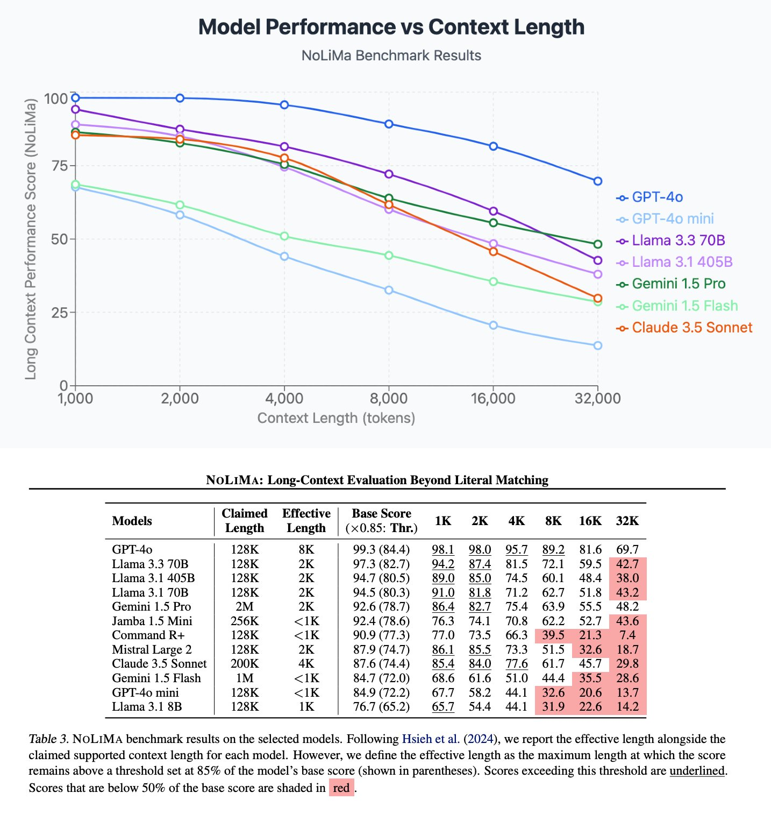

내가 보는 화면: 대화하는 것처럼 보여요
AI가 실제로 받는 것: 매번 '전체 묶음'
느낌이 아니라, 실제 연구 결과예요
맥락(컨텍스트)이 길어질수록 최신 모델들의 정확도가 일제히 떨어져요

비슷한 연구 더 보기: Lost in the Middle: 긴 맥락 가운데에 묻힌 정보는 놓친다 · LLMs Get Lost in Multi-Turn Conversation: 여러 턴에 나눠 지시하면 평균 39% 성능 하락
핵심 개념
시뮬레이션에서 방금 본 것들, 궁금한 개념을 눌러 보세요
AI가 한 번에 읽을 수 있는 글의 최대 길이예요. 대화가 이 창 안에 다 들어가야 해서, 매번 대화 전체 묶음을 다시 보내는 거예요. 창을 넘치면 오래된 앞부분부터 잘려 나가서 AI가 처음 약속을 까먹은 것처럼 보여요.
글이 길수록 AI는 훨씬 많은 계산을 하면서도 중요한 문장을 찾기 어려워져요. 시험 범위가 교과서 반 권에서 열 권으로 늘어난 셈이죠. 그래서 긴 대화 끝에서는 답이 느려지고, 앞의 내용을 놓치거나 섞기 시작해요.
1만 토큰이 넘은 대화에서는 질문 하나에도 1만 토큰 전체가 다시 전송돼요. 필요한 결론만 서너 줄로 요약해 새 창에 붙여넣으면 같은 정보를 수백 토큰으로 줄일 수 있어요. AI도 다시 또렷해지고, 속도·비용도 좋아져요.
AI의 '기억'은 전부 매번 다시 보내는 묶음 안에만 있어요. 창을 닫아 묶음이 사라지면 기억도 함께 사라져요. 모델 자체는 내 대화로 바뀌지 않는데, 그 이유는 학습의 비밀에서 확인할 수 있어요.